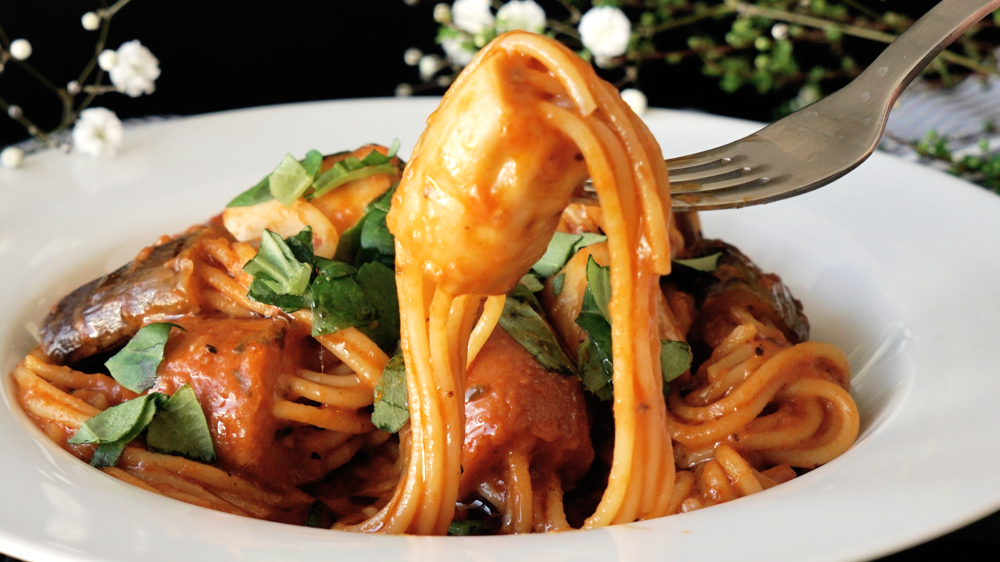

Are you planning to raid Area 51 soon? If so, don't do so on an empty stomach! Fill your alien saving selfs with our nutritious alien food. After the raid feed your little green friends as well with food that will remind them of home! We're right outside Area 51, so you can't miss us. We're totally not cops there to arrest you, we just want to provide some good ol' alien grub!
If you haven't signed up for the Area 51 raid, do so here!
